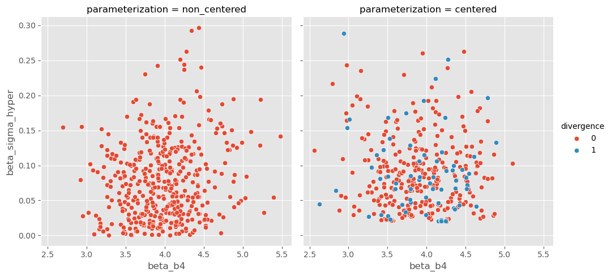
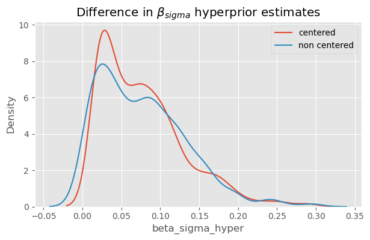

/Users/gabestechschulte/miniforge3/envs/probs/lib/python3.10/site-packages/arviz/plots/hdiplot.py:157: FutureWarning: hdi currently interprets 2d data as (draw, shape) but this will change in a future release to (chain, draw) for coherence with other functions
hdi_data = hdi(y, hdi_prob=hdi_prob, circular=circular, multimodal=False, **hdi_kwargs)
Figure 4.3
def sqrt_babies(month, length=None): N, P = month.shape beta_0 = pyro.sample('beta_0', dist.Normal(0., 10.)) beta_1 = pyro.sample('beta_1', dist.Normal(0, 10.).expand([P])) sigma = pyro.sample('sigma', dist.HalfNormal(10.)) mu = beta_0 + torch.matmul(beta_1, torch.sqrt(month.T))with pyro.plate('plate', size=N): y = pyro.sample('y', dist.Normal(mu, sigma), obs=length)
def generate_sales(*, days, mean, std, label):"""code taken from the authors / book""" np.random.seed(0) df = pd.DataFrame(index=range(1, days+1), columns=["customers", "sales"])for day inrange(1, days+1): num_customers = stats.randint(30, 100).rvs()+1# This is correct as there is an independent draw for each customers orders dollar_sales = stats.norm(mean, std).rvs(num_customers).sum() df.loc[day, "customers"] = num_customers df.loc[day, "sales"] = dollar_sales# Fix the types as not to cause Theano errors df = df.astype({'customers': 'int32', 'sales': 'float32'})# Sorting will make plotting the posterior predictive easier later df["Food_Category"] = label df = df.sort_values("customers")return df
def generate_sales(*, days, mean, std, label):"""code taken from authors / book""" np.random.seed(0) df = pd.DataFrame(index=range(1, days+1), columns=["customers", "sales"])for day inrange(1, days+1): num_customers = stats.randint(30, 100).rvs()+1# This is correct as there is an independent draw for each customers orders dollar_sales = stats.norm(mean, std).rvs(num_customers).sum() df.loc[day, "customers"] = num_customers df.loc[day, "sales"] = dollar_sales# Fix the types as not to cause Theano errors df = df.astype({'customers': 'int32', 'sales': 'float32'})# Sorting will make plotting the posterior predictive easier later df["Food_Category"] = label df = df.sort_values("customers")return df
extend shape to 3 because of the 3 food categories
use dtype = torch.long when using a tensor as indices
if you use the pyro.plate() primitive, it seems you do not need to specify the .expand() method on distributions, i.e., to make the batch size > 1 in the case of a multidimensional design matrix
/Users/gabestechschulte/miniforge3/envs/probs/lib/python3.10/site-packages/arviz/plots/hdiplot.py:157: FutureWarning: hdi currently interprets 2d data as (draw, shape) but this will change in a future release to (chain, draw) for coherence with other functions
hdi_data = hdi(y, hdi_prob=hdi_prob, circular=circular, multimodal=False, **hdi_kwargs)
/Users/gabestechschulte/miniforge3/envs/probs/lib/python3.10/site-packages/arviz/plots/hdiplot.py:157: FutureWarning: hdi currently interprets 2d data as (draw, shape) but this will change in a future release to (chain, draw) for coherence with other functions
hdi_data = hdi(y, hdi_prob=hdi_prob, circular=circular, multimodal=False, **hdi_kwargs)
/Users/gabestechschulte/miniforge3/envs/probs/lib/python3.10/site-packages/arviz/plots/hdiplot.py:157: FutureWarning: hdi currently interprets 2d data as (draw, shape) but this will change in a future release to (chain, draw) for coherence with other functions
hdi_data = hdi(y, hdi_prob=hdi_prob, circular=circular, multimodal=False, **hdi_kwargs)
/Users/wastechs/opt/anaconda3/envs/probs/lib/python3.8/site-packages/arviz/plots/hdiplot.py:157: FutureWarning: hdi currently interprets 2d data as (draw, shape) but this will change in a future release to (chain, draw) for coherence with other functions
hdi_data = hdi(y, hdi_prob=hdi_prob, circular=circular, multimodal=False, **hdi_kwargs)
/Users/wastechs/opt/anaconda3/envs/probs/lib/python3.8/site-packages/arviz/plots/hdiplot.py:157: FutureWarning: hdi currently interprets 2d data as (draw, shape) but this will change in a future release to (chain, draw) for coherence with other functions
hdi_data = hdi(y, hdi_prob=hdi_prob, circular=circular, multimodal=False, **hdi_kwargs)
/Users/wastechs/opt/anaconda3/envs/probs/lib/python3.8/site-packages/arviz/plots/hdiplot.py:157: FutureWarning: hdi currently interprets 2d data as (draw, shape) but this will change in a future release to (chain, draw) for coherence with other functions
hdi_data = hdi(y, hdi_prob=hdi_prob, circular=circular, multimodal=False, **hdi_kwargs)
Text(0.5, 1.0, 'Pooled Sigma')
Hierarchical Models
In the multi-level model above, the \(\sigma\) is assumed to be the same for all 3 categories. Instead, we can say that \(\sigma\) comes from the same underlying distribution, but is allowed to vary by category.
g = sns.FacetGrid(df, col='parameterization', hue='divergence', height=5)g.map_dataframe(sns.scatterplot, 'beta_b4', 'beta_sigma_hyper')g.set_axis_labels(xlabel='$\\beta_[4]$', ylabel='$\\beta_{\sigma h}$')g.add_legend()plt.show()

sns.kdeplot(df[df['parameterization'] =='centered']['beta_sigma_hyper'])sns.kdeplot(df[df['parameterization'] =='non_centered']['beta_sigma_hyper'])plt.legend(['centered', 'non centered'])plt.title('Difference in $\\beta_{sigma}$ hyperprior estimates');

Predictions at Multiple Levels
Using the fitted parameter estimates to make an out of sample prediction for the distribution of sales for 50 customers. - posterior predictive: learned parameters; the data the model expects to see - customer = data \(x\)
# .reshape(-1, 1) to ensure dimensions remain as [1000, 6] when multiplying# 6 b/c of 6 locationsbeta = ( non_centered_salad_samples['beta_offset'] * non_centered_salad_samples['beta_scale_hyper'].reshape(-1, 1) + non_centered_salad_samples['beta_loc_hyper'].reshape(-1, 1) )beta.size()